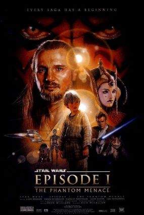

La menace Fantôme
Avant de devenir un célèbre chevalier Jedi, et bien avant de se révéler l’âme la plus noire de la galaxie,
Anakin Skywalker est un jeune esclave sur la planète Tatooine. La Force est déjà puissante en lui et il est
un remarquable pilote de Podracer.
Le maître Jedi Qui-Gon Jinn le découvre et entrevoit alors son immense potentiel.
Pendant ce temps, l’armée de droïdes de l’insatiable Fédération du Commerce a envahi Naboo, une planète pacifique,
dans le cadre d’un plan secret des Sith visant à accroître leur pouvoir. Pour défendre la reine de Naboo, Amidala,
les chevaliers Jedi vont devoir affronter le redoutable Seigneur Sith, Dark Maul.